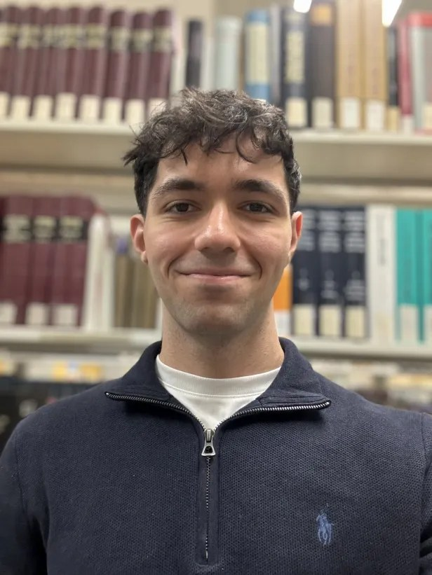
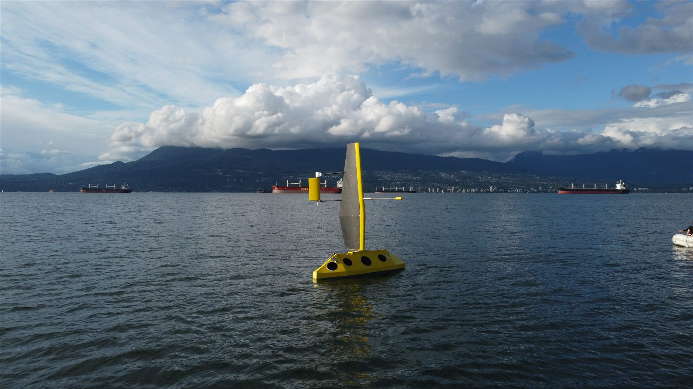

About

I'm an Electrical Engineering student at the University of British Columbia. I've worked extensively on SystemVerilog- and Verilog-based designs deployed on FPGAs, focused on FSM control, parallelism, and datapath design — and I like building things end to end: from a datapath in Verilog to the circuit board it eventually runs on.
Outside of coursework, I pursue HDL projects in my free time, gaining hands-on experience reasoning about control-heavy digital systems and the trade-offs involved in designing scalable accelerator architectures.
I'm currently an FPGA Developer Intern at Kardium, an undergraduate researcher working on RISC-V debug infrastructure with Prof. Guy Lemieux, and Firmware Lead for UBC Sailbot's autonomous sailboat, Polaris.
Experience
FPGA Developer Intern — Kardium Inc
- Closed code-coverage gaps in AXI slave logic by creating a reusable, RAL-style VHDL test procedure library that classifies registers by access type and exercises the shared AXI interface across applicable testbenches
- Designed an FPGA/firmware interlock for an I2C interface in VHDL through the Xilinx AXI IIC tri-state path, verifying lockout behavior with assertions and Vivado ILA
- Implemented a firmware-controlled ADC reset architecture across five FPGA boards using AXI control, CDC synchronization, and MMCM/ODDR reset gating
- Debugged AXI4 read-data corruption under
RREADYbackpressure across six slave peripherals and added stall procedures that raised coverage across five testbenches - Added a Python static-analysis check enforcing a safety-critical synthesis acceptance criterion across two vendor-tool syntax variants
- Updated FPGA CI/CD automation to separate FSBL/PMUFW compilation from Vivado bitstream generation, reducing build time from approximately 60 to 10 minutes
Undergraduate Research Assistant — UBC Electrical & Computer Engineering
- Reverse-engineered execution-based debugging in the CV32E20, an Ibex-derived RISC-V core, and published an open-source tutorial covering the complete GDB–OpenOCD–RISC-V Debug Module workflow
- Extended a single-cycle RV32I processor with run-control debugging in SystemVerilog, implementing a debug FSM, four debug CSRs, ebreak/dret decoding, and next-PC redirection for halt and resume
- Verified the halt–park–resume sequence, including dpc capture and restoration, using a self-checking Verilator testbench that emulated Debug Module requests
- Received recognition from Prof. David Harris, co-author of Digital Design and Computer Architecture, who identified the work as a potential reference for an upcoming processor-debug chapter
Firmware Lead — UBC Sailbot
- Lead firmware development for an autonomous sailboat, coordinating embedded interfaces, telemetry, testing, and deliverables across the electrical team
- Developed STM32 firmware for custom power-distribution boards, implementing battery voltage and temperature monitoring, CAN-FD communication with a Raspberry Pi, and controlled shutdown/restart sequencing
- Designed a supercapacitor energy buffering board to stabilize the boat's power system during transient loads

Polaris, UBC Sailbot's autonomous sailboat, off Jericho Beach, Vancouver.